SOCA Platform — User Guide¶
SOCA (Security Operations Center Automation) is an AI-powered edge video analytics platform. This guide covers everyday operator tasks across two apps:
- SOCA Dashboard (
http://<edge-ip>:8080) — single-edge management: cameras, detection schedules, live streams, alerts. - SOCA Engine (
http://<edge-ip>:8082) — the AI inference backend; mostly used via API or the Dashboard push action.
1. Logging In¶
Navigate to the Dashboard URL and sign in with your username and password.
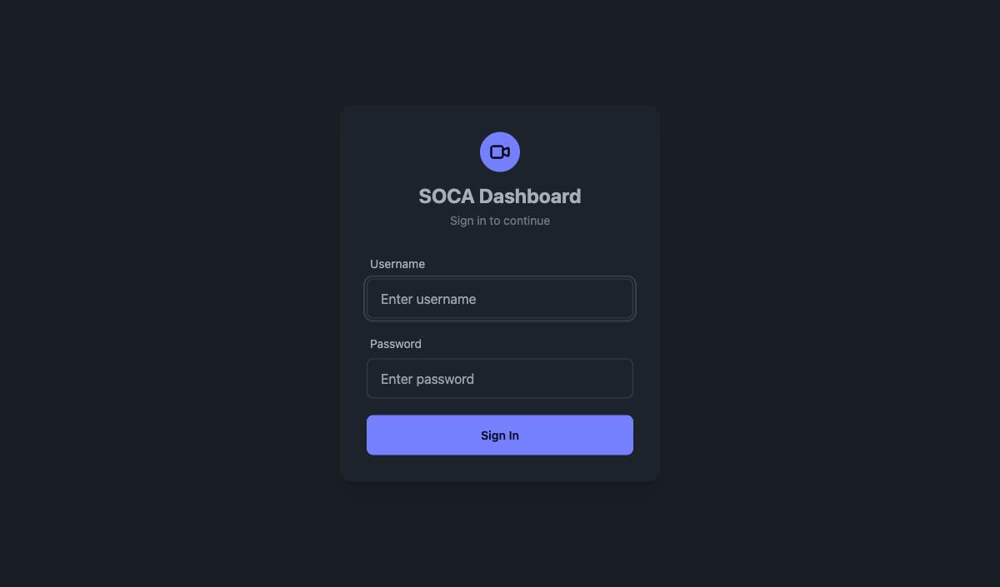
| Role | What they can do |
|---|---|
| Admin | Full access: cameras, schedules, settings, user management |
| Operator | Cameras, schedules, alerts — no user/system settings |
| Viewer | Read-only: dashboard, alerts, live streams |
2. Dashboard Home¶
After login you land on the Dashboard overview.
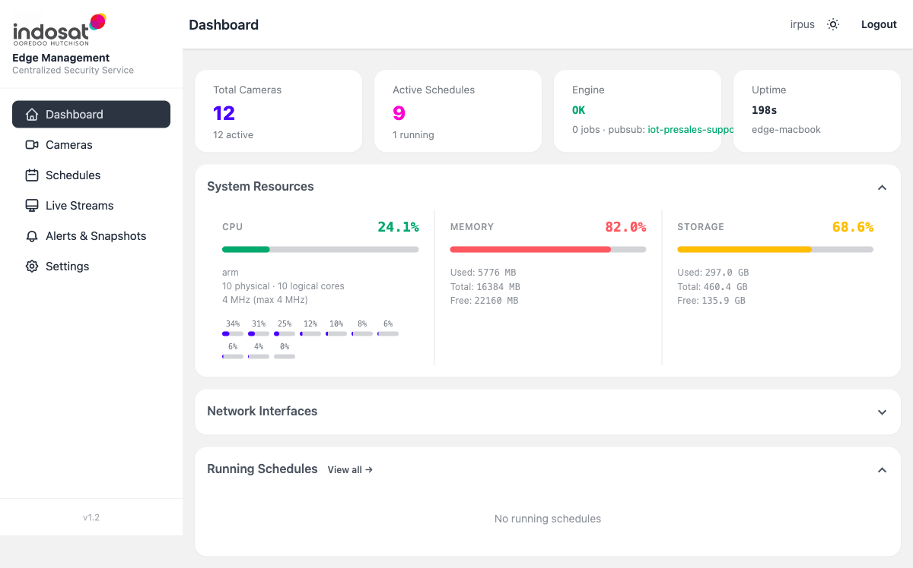
| Widget | Description |
|---|---|
| Total Cameras | Number of registered cameras (active/total) |
| Active Schedules | Detection schedules marked Active |
| Engine | Engine health — OK means the inference service is reachable |
| Uptime | Edge host uptime |
| System Resources | Live CPU, Memory, and Storage usage |
| Network Interfaces | Network adapter list (expand to view IPs) |
| Running Schedules | Jobs currently running — click View all to go to Schedules |
3. Cameras¶
Cameras → Camera List shows every registered RTSP source.
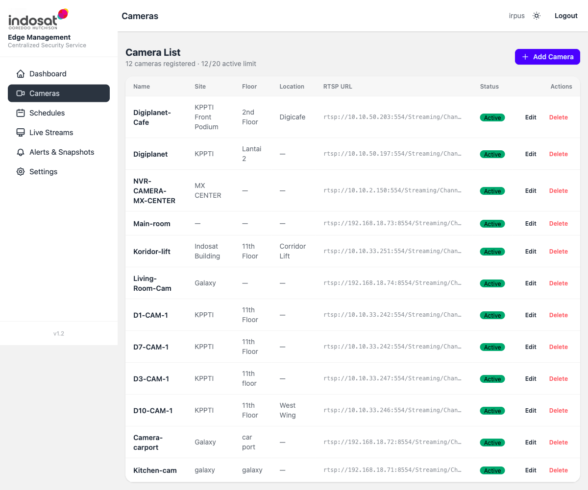
3.1 Add a Camera¶
- Click + Add Camera (top-right).
- Fill in the form:
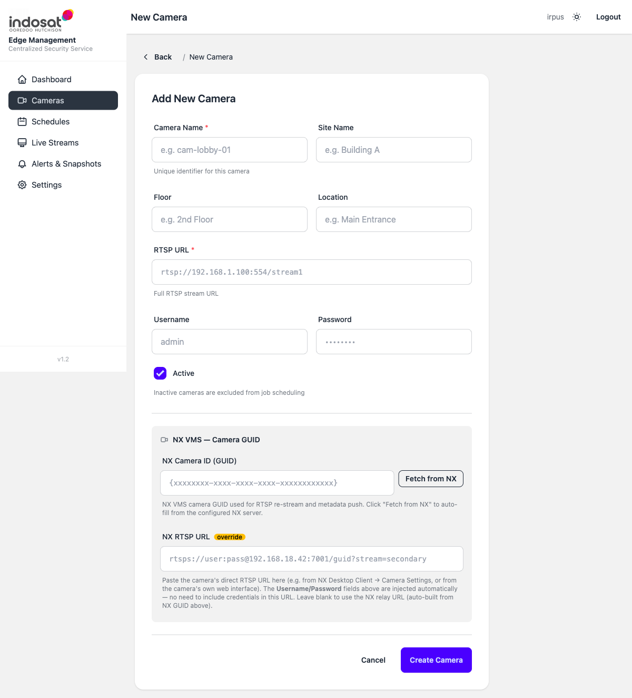
| Field | Required | Notes |
|---|---|---|
| Camera Name | Yes | Unique slug, e.g. lobby-01 |
| Site Name | No | Building or site label |
| Floor / Location | No | Physical location metadata |
| RTSP URL | Yes | Full stream URL, e.g. rtsp://192.168.1.100:554/stream1 |
| Username / Password | No | Injected into the RTSP stream automatically |
| Active | — | Uncheck to exclude from scheduling |
| NX Camera ID (GUID) | No | If using NX VMS, click Fetch from NX to auto-fill |
| NX RTSP URL | No | Override URL for the NX relay stream |
- Click Create Camera.
3.2 Edit or Delete a Camera¶
From the Camera List, click Edit or Delete in the Actions column.
Deleting a camera does not stop running jobs — stop any active schedule first.
3.3 Test a Snapshot¶
Click the camera name to open its detail page and request a test snapshot to verify the stream is reachable.
4. Schedules (Detection Jobs)¶
A Schedule pairs a camera with an AI model and defines when and how to run inference.
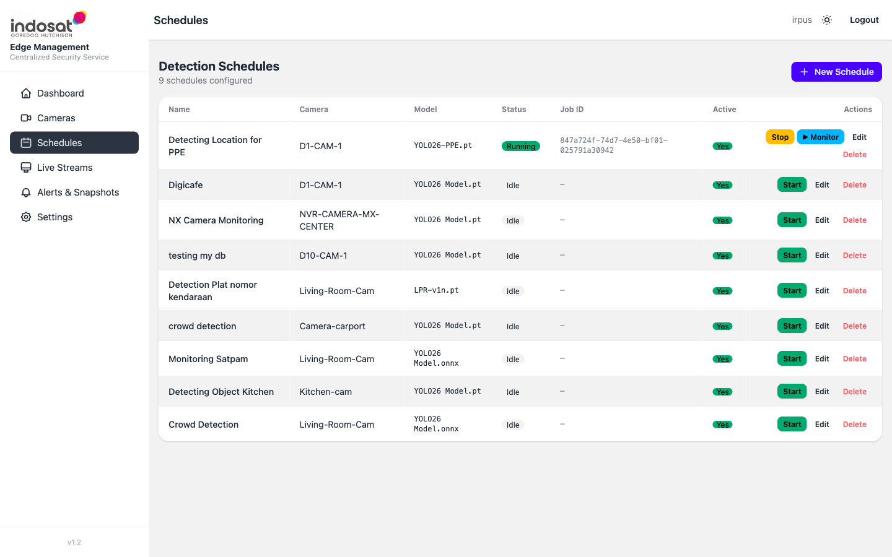
Status values:
| Status | Meaning |
|---|---|
| Idle | Configured but not running |
| Running | Active inference job in progress |
| error | Job started but encountered a problem — check engine logs |
4.1 Create a Schedule¶
- Click + New Schedule.
- Fill in the form:
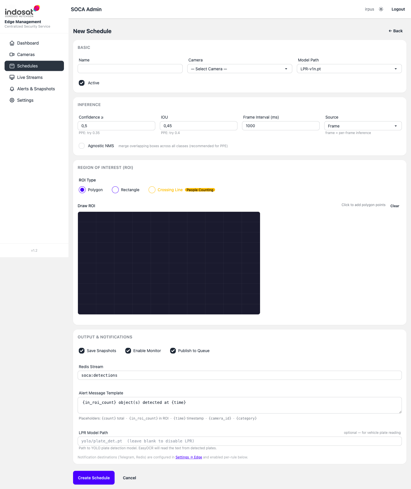
BASIC section
| Field | Notes |
|---|---|
| Name | Descriptive label, e.g. Lobby PPE Check |
| Camera | Select from registered cameras |
| Model Path | AI model file (YOL026 Model.pt, LPR-v1n.pt, etc.) |
| Active | Uncheck to save without enabling |
INFERENCE section
| Field | Default | Notes |
|---|---|---|
| Confidence ≥ | 0.5 | Minimum detection score (0–1). Lower = more detections, more false positives. For PPE try 0.35 |
| IOU | 0.45 | Overlap threshold for NMS. For PPE try 0.4 |
| Frame Interval (ms) | 1000 | How often to sample a frame. Lower = higher CPU usage |
| Source | Frame | Frame = per-frame; other modes process video segments |
| Agnostic NMS | off | Enable for PPE models to merge boxes across classes |
REGION OF INTEREST (ROI)
Draw the zone where detections should be counted: - Polygon — click points on the canvas to draw a free-form zone - Rectangle — drag a rectangular zone - Crossing Line — for people/vehicle counting across a line (People Counting mode)
Click Clear to reset the drawn zone.
OUTPUT & NOTIFICATIONS
| Option | Effect |
|---|---|
| Save Snapshots | Store a cropped image for each detection event |
| Enable Monitor | Push live frames to the Live Streams viewer |
| Publish to Queue | Forward events to the configured Redis stream |
| Redis Stream | Stream name (default: soca:detections) |
| Alert Message Template | Notification text with placeholders (see below) |
| LPR Model Path | Secondary YOLO model for license-plate OCR |
Available template placeholders: {count}, {in_roi_count}, {time}, {camera_id}, {category}
- Click Create Schedule.
4.2 Edit a Schedule & Rules¶
Click Edit on any schedule to open the full edit form.
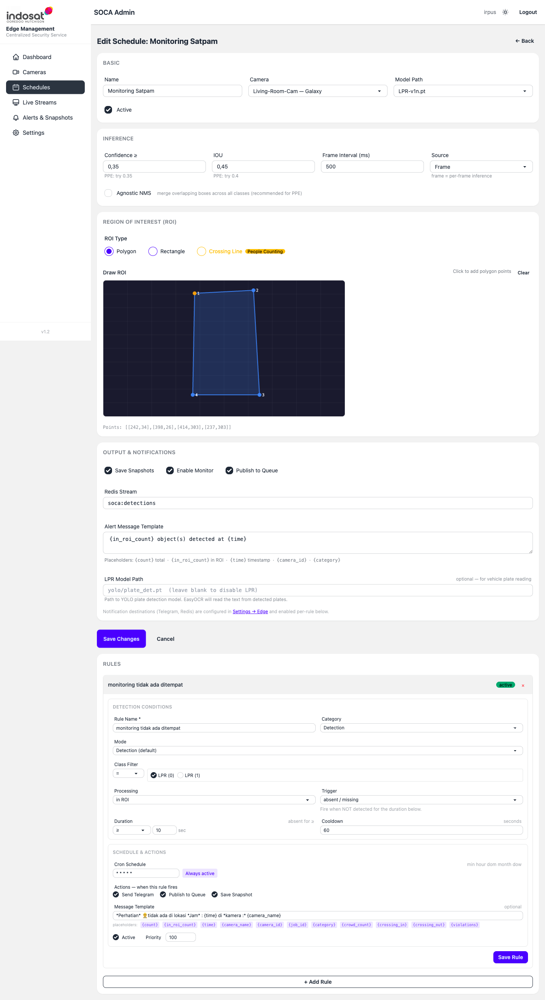
Scroll past the main form to the RULES section. Rules fire conditional alerts on top of the base detection:
| Rule field | Notes |
|---|---|
| Rule Name | Label shown in alerts |
| Category | Detection, Violation, Absence etc. |
| Mode | Detection (default) or specialised modes |
| Class Filter | Limit to specific YOLO classes (e.g. person, car) |
| Processing | In ROI counts only objects inside the drawn zone |
| Trigger | When the rule fires — e.g. absent / missing fires when an object is NOT detected |
| Duration | How long condition must persist before firing |
| Cooldown | Minimum seconds between repeated rule firings |
| Cron Schedule | When the rule is active (* * * * * = always) |
| Actions | Send Telegram, Publish to Queue, Save Snapshot |
| Message Template | Alert body with placeholders |
Click Save Rule to persist, + Add Rule to add another rule, or × to remove a rule.
4.3 Start / Stop a Job¶
From the Schedule list, click Start to launch inference or Stop to halt a running job. The status column updates automatically.
5. Live Streams (Monitor)¶
Live Streams shows real-time video feeds for schedules that have Enable Monitor turned on.
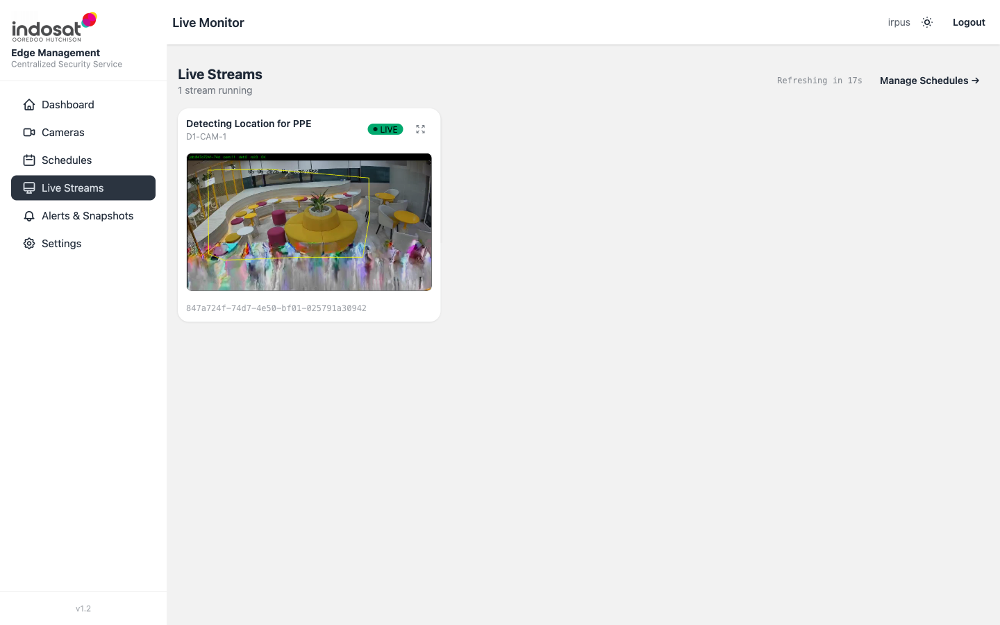
If no streams are shown, make sure at least one schedule is running with Enable Monitor enabled. The page auto-refreshes every 30 seconds.
6. Alerts & Snapshots¶
Alerts & Snapshots is the event log — every detection event that matched a rule appears here.
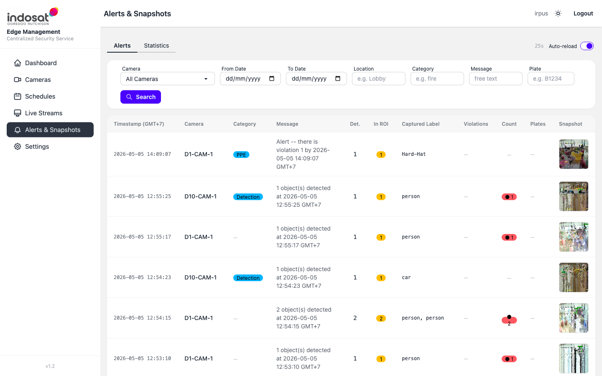
Filtering¶
Use the filter bar at the top:
| Filter | Description |
|---|---|
| Camera | Limit to a specific camera |
| From / To Date | Date range in dd/mm/yyyy format |
| Location | Text search on location field |
| Category | Alert category (Detection, Violation, etc.) |
| Message | Free-text search on the alert message |
| Plate | Search for a detected license plate number |
Click Search to apply. Pagination controls appear at the bottom.
Statistics Tab¶
Switch to the Statistics tab for aggregated counts and charts grouped by camera or time period.
Alert Detail¶
Click any row to open the alert detail, which shows the full snapshot image, bounding boxes, detected labels, and rule that triggered the event.
7. Settings¶
Settings provides system-level configuration in tabbed sections.
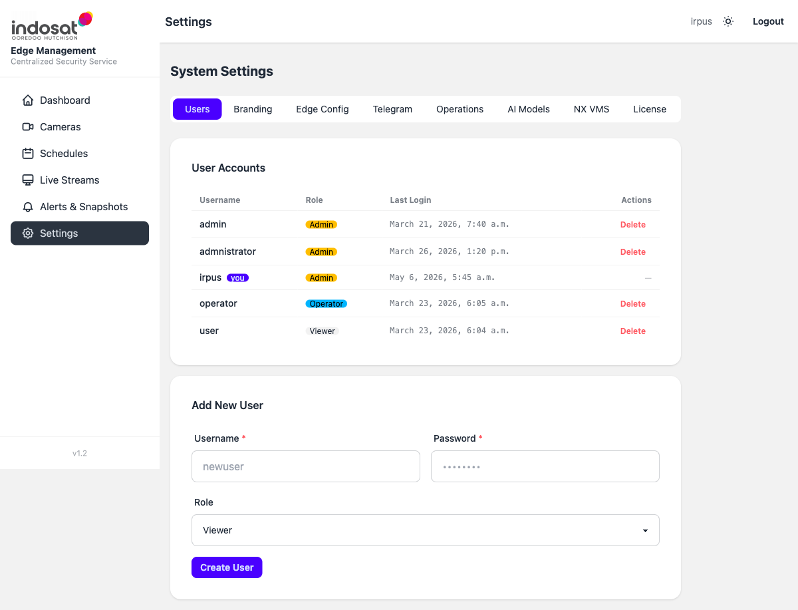
| Tab | Purpose |
|---|---|
| Users | Add/remove user accounts and assign roles (Admin, Operator, Viewer) |
| Branding | Change the site name and logo |
| Edge Config | Set edge node identity, API key, engine key, and Pub/Sub topic |
| Telegram | Configure Telegram bot token and default chat ID for alert notifications |
| Operations | View schedule job statuses, purge old snapshot data |
| AI Models | Upload or delete .pt / .onnx model files used by the engine |
| NX VMS | Configure NX server URL and credentials for camera GUID resolution |
| License | Activate, refresh or unlink the SOCA platform license |
7.1 Add a User¶
- Go to Settings → Users.
- Fill in Username, Password, select Role.
- Click Create User.
7.2 Push Config to Engine¶
After changing cameras, schedules, or edge settings, push the latest config to the engine:
- Go to Settings → Edge Config.
- Click Push to Engine — the dashboard sends the full camera and schedule config to the soca-engine API.
7.3 Purge Old Snapshots¶
To free disk space:
- Go to Settings → Operations.
- Click Preview to see how many files will be removed.
- Click Execute to delete snapshots older than the configured retention period.
8. SOCA Engine API¶
The engine exposes a REST API at http://<edge-ip>:8082. Interactive docs are available at /docs.
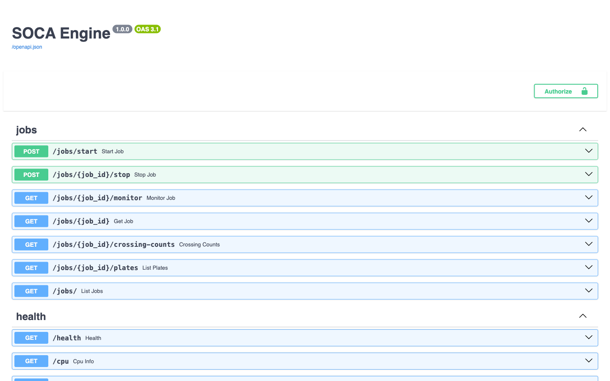
Full endpoint list:
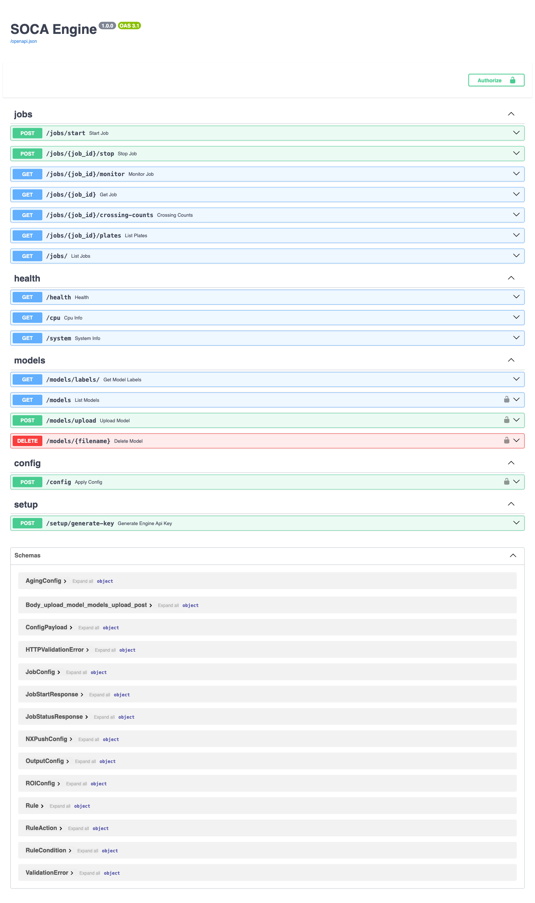
Key endpoint groups:
| Group | Endpoints |
|---|---|
| jobs | Start job, Stop job, Get job, Monitor job (WebSocket), List jobs |
| health | Health check, CPU info, System info |
| models | List models, Upload model, Delete model, Get model labels |
| config | Apply config (cameras + schedules pushed from Dashboard) |
| setup | Generate engine API key |
Authentication uses an API key header. Generate the key from Settings → Edge Config → Generate Engine Key in the Dashboard.
9. Common Tasks — Quick Reference¶
| Task | Where |
|---|---|
| Add first camera | Cameras → + Add Camera |
| Run a detection job | Schedules → Start |
| Watch live video | Live Streams (schedule must have Enable Monitor on) |
| Review detection events | Alerts & Snapshots |
| Add a new user | Settings → Users → Create User |
| Upload a new AI model | Settings → AI Models → Upload |
| Connect to NX VMS | Settings → NX VMS |
| Set up Telegram alerts | Settings → Telegram → configure bot, then add rules to schedules |
| Free disk space | Settings → Operations → Purge |
| Push config to engine | Settings → Edge Config → Push to Engine |
10. Troubleshooting¶
| Symptom | Likely cause | Fix |
|---|---|---|
| Schedule status shows error | Engine unreachable or model path wrong | Check Engine status on Dashboard home; verify model file exists in Settings → AI Models |
| Live stream shows "No live streams available" | Schedule not running or Enable Monitor is off | Start a schedule with Enable Monitor checked |
| No alerts appearing | Rule not configured or Confidence too high | Edit the schedule, add a Rule, lower Confidence threshold |
| Camera snapshot fails | Wrong RTSP URL or credentials | Edit camera and test URL with VLC or ffprobe |
| Telegram notifications not arriving | Bot token or chat ID wrong | Settings → Telegram → verify token and chat ID |
Engine shows Not Found at / |
Normal — engine root is not documented | Use /docs for the API or /health for a health check |